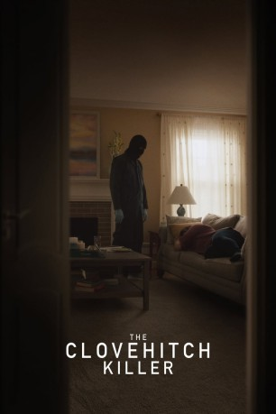

#11592 The Clovehitch Killer
 
 IMDB-Wertung: 6.5 / 10
IMDB-Wertung: 6.5 / 10  Tomatometer: 77
Tomatometer: 77  Metascore: 59
Metascore: 59 
Tyler Burnside wächst als unbescholtener Junge in einer Kleinstadt auf, die noch immer traumatisiert von der Mordserie des sogenannten Clovehitch-Killers vor zehn Jahren ist. Eines Tages entdeckt Tyler verstörende Bilder, die seinem Vater gehören müssen. Ein schrecklicher Verdacht keimt in ihm hoch...
Jahr: 2018
Dauer: 109 Minuten
FSK:
Land: USA Studio: IFC MidnightTonspuren: - , - , - , - , - ,
Untertitel: Deutsch,
Auflösung: 1080p (1920x1080) Größe: 8509 MB
Genre: Thriller, Drama, Krimi, Mystery
Regisseur: Duncan Skiles
Drehbuch: Christopher Ford
Soundtrack: Matt Veligdan
Darsteller:
 Dylan McDermott als Don Burnside
Dylan McDermott als Don Burnside Charlie Plummer als Tyler Burnside
Charlie Plummer als Tyler Burnside Samantha Mathis als Cindy
Samantha Mathis als Cindy Madisen Beaty als Kassi
Madisen Beaty als Kassi- Brenna Sherman als Susie Burnside
- Lance Chantiles-Wertz als Billy
- Jonathan K. Riggs als Pastor Randy
- Kat Pérez als Friendly Woman
- Mark A. Nash als Uncle Rudy
- Michael Urriquia als Rich Guy
- Mike Cortese als Young Father / Mr. Devlin
- Lea Hutton Beasmore als Grocery Shopper (uncredited)
- Charlie Clark als Wallace Jr. (uncredited)
- Sarah Cleveland als (uncredited)
- Matthew Davis als Kassi's Dad (uncredited)
- Collin Grubbs als Boy Scout (uncredited)
- Tracy W. Marx als Church Member (uncredited)
- Gina Fountain Schneider als Church member (uncredited)
- Emma Jones als Amy
- Janet Scott als Barbara Donnelly
- Stan Simonov als Sheriff
- Mercedes Carter als Church Friend (uncredited)
- Isaac L. Joseph als Boy Scout (uncredited)
- Steve Longhurst als Extra (uncredited)
- Dillon Lynch als Church member / family of victim (uncredited)
- LeeAnn Lyninger als Church Member (uncredited)
- Matthew T. Schneider als Scout troop member (uncredited)
Datei: X:\2018(A-F)\Clovehitch Killer, The (2018, FSK, 1920x1080).mkv seit 01.08.2019
Festplatte: HD 2017(A-Z)-2018(A-F)
 Es gibt insgesamt 151 Filme in der Gruppe '2018(A-F)'
Es gibt insgesamt 151 Filme in der Gruppe '2018(A-F)'